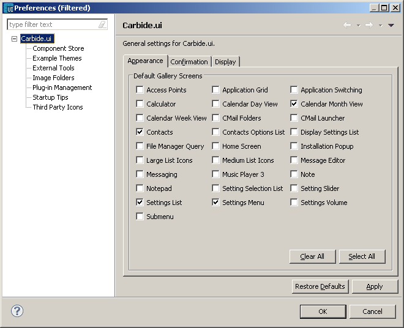

Carbide.ui Preferences
Configuring general user
preferences
In the menu bar, select Window ->
Preferences.
The Preferences window opens.
In the tree view on the left, select Carbide.ui.
Appearance
Appearance
for Series 60
- In the Carbide.ui pane,
select the Appearance
tab.
- In the Appearance
tab,
to set the default screens that Carbide.ui loads every time in gallery
view when it is
started. In the Default Gallery Screens option, select the check boxes
next to
those screens that you want to have as default screens.
- Click OK.

Figure:
Appearance